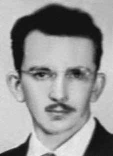

Antônio
Raymundo
de Lucena
CIRCUNSTÂNCIAS DA MORTE
Antônio Raymundo Lucena foi morto no dia 20 de fevereiro de 1970, por volta das 15h, em sua residência. A versão dos órgãos da repressão afirma que Antônio foi morto com nove tiros, pela polícia militar da cidade de Atibaia.
Em documentação do Departamento de Ordem Política e Social de São Paulo (DOPS/SP), assinada pelo delegado Alcides Singillo, consta que o comparecimento de policiais à sua residência teria sido em decorrência de um suposto roubo de veículo por parte de um de seus filhos e outro rapaz. A justificativa é que Antônio já saíra de casa atirando, o que levou à morte de um dos policiais. A reação nesse caso é colocada como defesa pelas agressões, sem nenhum conhecimento da militância política de Antônio. Contudo, conforme depoimentos de sua esposa, Damaris Oliveira Lucena, o pretexto utilizado pelos agentes de segurança para ir à sua casa não fazia sentido, já que seu filho mais velho, Ariston de Oliveira Lucena, estava fora há aproximadamente seis meses.
Segundo Damaris, a justificativa utilizada pelos policiais despertou suspeita. Os policiais, então, mandaram chamar seu marido. Neste momento, afirma, ela pediu para que eles aguardassem, instante no qual voltou para casa e acordou Antônio, que estava dormindo. Em seguida, tiros foram ouvidos. Após ser gravemente ferido, Antônio caiu ao lado do tanque, fora da casa, e recebeu um último tiro na têmpora, na presença da família. Damaris e os filhos foram presos. Em suas declarações, Damaris afirma ter sido violentamente torturada até serem liberados, em decorrência do sequestro de cônsul japonês Nobuo Okuchi, e banidos do Brasil até a Lei da Anistia de 1979.
Anos após o crime, a Comissão de Familiares de Mortos e Desaparecidos Políticos se dirigiu a Atibaia, colhendo depoimentos sobre sua morte. Dentre eles, um policial afirmou que, após ter dado informações à imprensa, foi proibido pelo comando da Polícia Militar de comentar o que acontecera à época. O laudo de exame de corpo de delito, feito no Instituto Médico-Legal de São Paulo (IML/SP) e assinado pelos médicos Frederico Idelfonso Marri Amaral e Orlando Brandão, além de afirmar que Antônio fora morto pela polícia, referiu-se a inúmeros ferimentos feitos por arma de fogo: nove de penetração e um de saída do projetil. Porém, nenhum tiro na cabeça, pescoço ou têmpora é indicado neste laudo. Em contrapartida, a foto encontrada do cadáver nos arquivos do Superior Tribunal Militar (STM), evidencia edemas no nariz e no olho esquerdo, além de escoriações e afundamento da testa.
Em 1999, após ser impetrado processo disciplinar, sob denúncia do Grupo Tortura Nunca Mais, o médico Frederico Ildefonso Marri Amaral foi considerado culpado pela precariedade do laudo pericial, sumário e incompleto, pois não dava informações suficientes sobre ferimentos no crânio da vítima, o que atestaria a versão de sua esposa. A conclusão do processo evidencia que o laudo necroscópico foi preparado de forma inadequada, visando acobertar a morte violenta de uma vítima que já estava ferida e impossibilitada de reagir, abrindo, assim, espaço para a interpretação de que teria havido execução sumária.
Antônio foi sepultado sem a presença de Damaris e dos filhos, no cemitério de Vila Formosa, em São Paulo. Segundo Relatório do Ministério Público Federal, de 2010, ele teria sido enterrado no terreno nº 253, antiga quadra 57. Porém, como o cemitério passou por diversas reformas irregulares no decorrer dos anos, as quadras foram desconfiguradas, dificultando o processo de localização dos restos mortais. Na década de 1990, com a abertura da Vala de Perus, foram feitas diversas escavações também no cemitério de Vila Formosa, mas que não obtiveram êxito. Os restos mortais de Antônio Raymundo de Lucena até a presente data não foram encontrados. Diante da morte e da ausência de identificação plena de seus restos mortais, a Comissão Nacional da Verdade (CNV), ao conferir tratamento jurídico adequado ao caso, entende que Antônio Raymundo de Lucena permanece desaparecido.
Antônio Raymundo Lucena was killed on February 20, 1970, around 3 pm, in his home. The version of the repression bodies states that Antônio was killed with nine shots, by the military police of the city of Atibaia.
In documentation from the Department of Political and Social Order of São Paulo (DOPS/SP), signed by delegate Alcides Singillo, it is stated that the police presence at his residence was due to an alleged vehicle theft by one of his sons and another boy. The justification is that Antônio had already left the house shooting, which led to the death of one of the police officers. The reaction in this case is placed as a defense for the attacks, without any knowledge of Antônio's political activism. However, according to statements from his wife, Damaris Oliveira Lucena, the pretext used by security agents to go to his house made no sense, since his eldest son, Ariston de Oliveira Lucena, had been away for approximately six months.
According to Damaris, the justification used by the police aroused suspicion. The police then sent for her husband. At that moment, she states, she asked them to wait, at which point she returned home and woke up Antônio, who was sleeping. Then shots were heard. After being seriously injured, Antônio fell next to the tank, outside the house, and received a final shot in the temple, in the presence of his family. Damaris and her children were arrested. In her statements, Damaris claims to have been violently tortured until they were released, as a result of the kidnapping of Japanese consul Nobuo Okuchi, and banished from Brazil until the Amnesty Law of 1979.
Years after the crime, the Commission of Relatives of Political Dead and Disappeared went to Atibaia, collecting statements about his death. Among them, a police officer stated that, after giving information to the press, he was prohibited by the Military Police command from commenting on what had happened at the time. The forensic examination report, carried out at the Instituto Médico-Legal de São Paulo (IML/SP) and signed by doctors Frederico Idelfonso Marri Amaral and Orlando Brandão, in addition to stating that Antônio was killed by the police, referred to numerous injuries caused by a firearm: nine from penetration and one from the exit of the projectile. However, no shot to the head, neck or temple is indicated in this report. On the other hand, the photo found of the corpse in the files of the Superior Military Court (STM) shows edema on the nose and left eye, as well as abrasions and sunken forehead.
In 1999, after disciplinary proceedings were filed, following a complaint from Grupo Tortura Nunca Mais, doctor Frederico Ildefonso Marri Amaral was found guilty of the precariousness of the expert report, which was summary and incomplete, as it did not provide sufficient information about injuries to the victim's skull, which would confirm his wife's version. The conclusion of the process shows that the necroscopic report was prepared inappropriately, aiming to cover up the violent death of a victim who was already injured and unable to react, thus opening space for the interpretation that there had been a summary execution.
Antônio was buried without the presence of Damaris and his children, in the Vila Formosa cemetery, in São Paulo. According to a 2010 Federal Public Prosecutor's Office report, he was buried in plot No. 253, former block 57. However, as the cemetery underwent several irregular renovations over the years, the blocks were disfigured, making the process of locating the remains difficult. In the 1990s, with the opening of the Vala de Perus, several excavations were also carried out in the Vila Formosa cemetery, but were unsuccessful. The remains of Antônio Raymundo de Lucena have not been found to date. In light of his death and the lack of full identification of his remains, the National Truth Commission (CNV), upon granting appropriate legal treatment to the case, understands that Antônio Raymundo de Lucena remains missing.
Antônio Raymundo Lucena fue asesinado el 20 de febrero de 1970, alrededor de las 15 horas, en su casa. La versión de los órganos de represión afirma que Antônio fue asesinado con nueve disparos, por policías militares de la ciudad de Atibaia.
En documento del Departamento de Orden Político y Social de São Paulo (DOPS/SP), firmado por el delegado Alcides Singillo, se afirma que la presencia policial en su residencia se debió a un presunto robo de vehículo por parte de uno de sus hijos y otro niño. La justificación es que Antônio ya había salido de la casa a tiros, lo que provocó la muerte de uno de los policías. La reacción en este caso se presenta como defensa de los ataques, sin conocimiento del activismo político de Antônio. Sin embargo, según declaraciones de su esposa, Damaris Oliveira Lucena, el pretexto utilizado por los agentes de seguridad para acudir a su casa no tenía sentido, ya que su hijo mayor, Ariston de Oliveira Lucena, llevaba aproximadamente seis meses ausente.
Según Damaris, la justificación utilizada por la policía despertó sospechas. Entonces la policía mandó llamar a su marido. En ese momento, afirma, les pidió que esperaran, momento en el que regresó a su casa y despertó a Antônio, que estaba durmiendo. Luego se escucharon disparos. Después de ser gravemente herido, Antônio cayó junto al tanque, afuera de la casa, y recibió un último disparo en la sien, en presencia de su familia. Damaris y sus hijos fueron arrestados. En sus declaraciones, Damaris afirma haber sido torturada violentamente hasta su liberación, a raíz del secuestro del cónsul japonés Nobuo Okuchi, y desterrada de Brasil hasta la Ley de Amnistía de 1979.
Años después del crimen, la Comisión de Familiares de Muertos y Desaparecidos Políticos acudió a Atibaia, recabando declaraciones sobre su muerte. Entre ellos, un policía afirmó que, luego de dar información a la prensa, el comando de la Policía Militar le prohibió comentar lo sucedido en ese momento. El informe del examen forense, realizado en el Instituto Médico-Legal de São Paulo (IML/SP) y firmado por los médicos Frederico Idelfonso Marri Amaral y Orlando Brandão, además de afirmar que Antônio fue asesinado por la policía, refirió numerosas lesiones causadas por arma de fuego: nueve por penetración y una por salida del proyectil. Sin embargo, en este informe no se indica ningún disparo en la cabeza, el cuello o la sien. Por otro lado, la fotografía encontrada del cadáver en los expedientes del Tribunal Superior Militar (STM) muestra edema en nariz y ojo izquierdo, además de abrasiones y frente hundida.
En 1999, luego de iniciado un proceso disciplinario, tras una denuncia del Grupo Tortura Nunca Mais, el médico Frederico Ildefonso Marri Amaral fue declarado culpable de la precariedad del informe pericial, que fue sumario e incompleto, ya que no aportaba información suficiente sobre las lesiones en el cráneo de la víctima, que confirmara la versión de su esposa. La conclusión del proceso demuestra que el informe necroscópico fue elaborado de manera inadecuada, con el objetivo de encubrir la muerte violenta de una víctima que ya estaba herida y sin capacidad de reaccionar, abriendo espacio para la interpretación de que hubo una ejecución sumaria.
Antônio fue enterrado sin la presencia de Damaris y sus hijos, en el cementerio de Vila Formosa, en São Paulo. Según un informe del Ministerio Público Federal de 2010, fue enterrado en el lote N° 253, ex manzana 57. Sin embargo, como el cementerio sufrió varias remodelaciones irregulares a lo largo de los años, las manzanas quedaron desfiguradas, dificultando el proceso de localización de los restos. En los años 1990, con la apertura de la Vala de Perus, también se llevaron a cabo varias excavaciones en el cementerio de Vila Formosa, pero no tuvieron éxito. Los restos de Antônio Raymundo de Lucena no han sido encontrados hasta la fecha. Ante su muerte y la falta de identificación plena de sus restos, la Comisión Nacional de la Verdad (CNV), al otorgar el tratamiento jurídico adecuado al caso, entiende que Antônio Raymundo de Lucena continúa desaparecido.